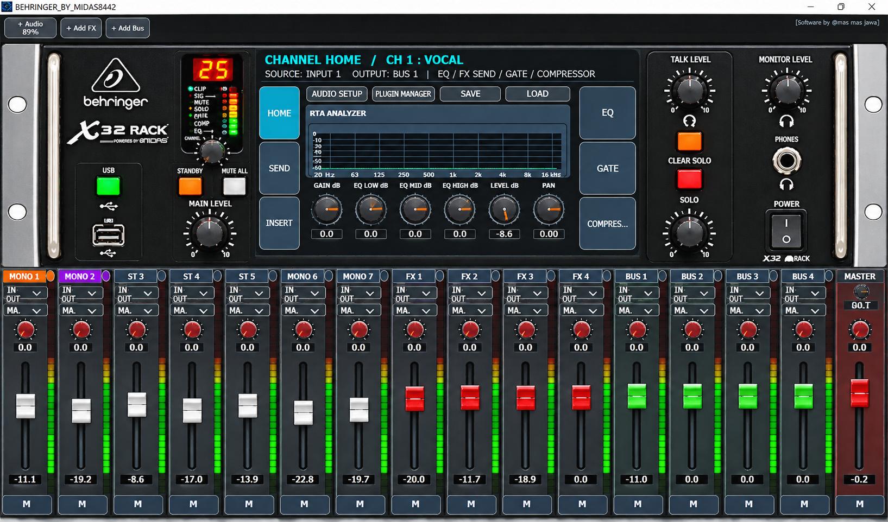
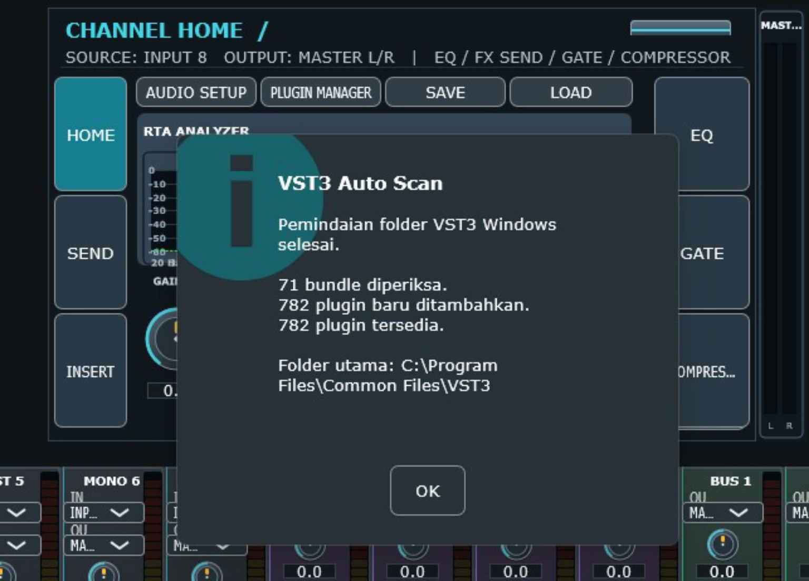
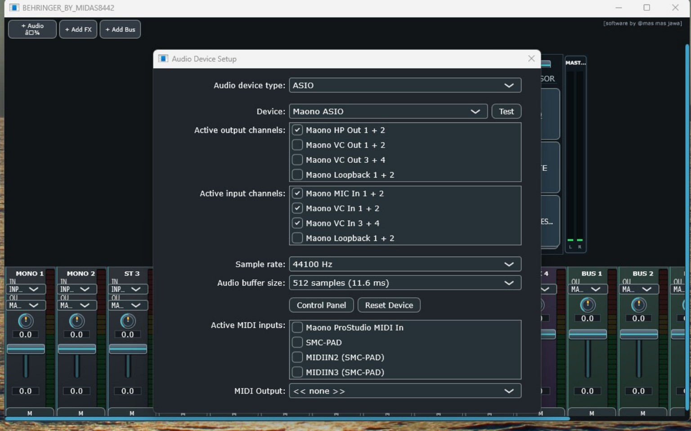
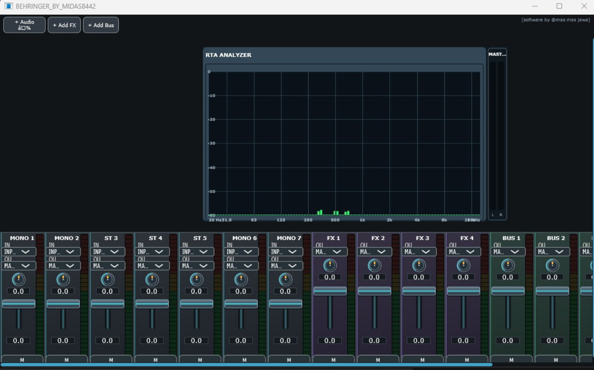
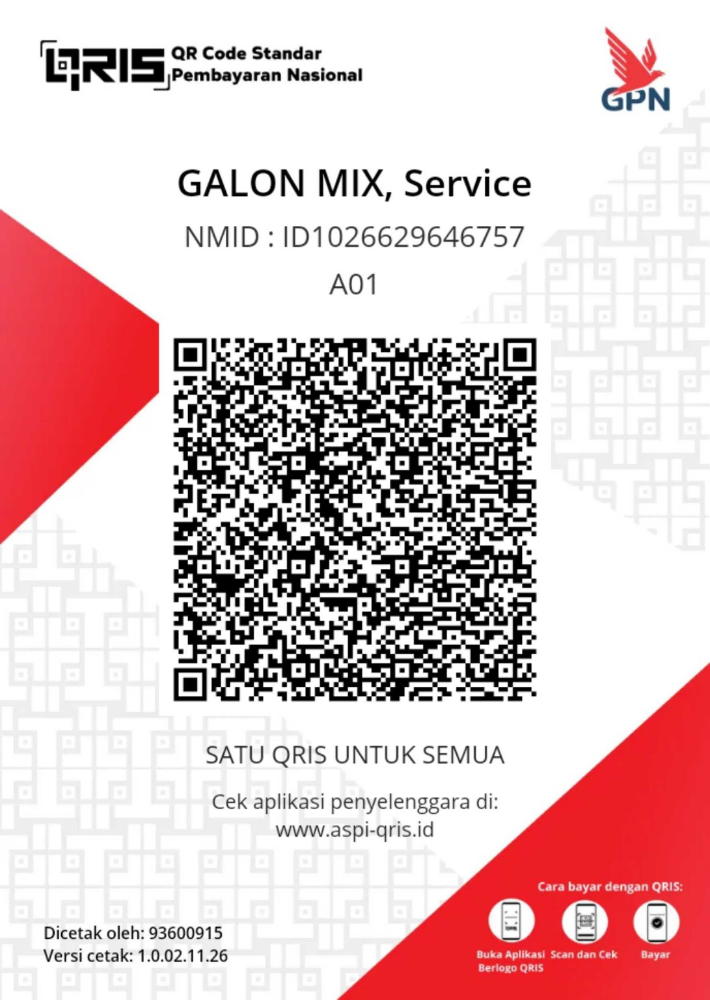

Mix your sound.
Your way.
Kenalkan GALON MIX, aplikasi audio mixer untuk Windows 64-bit. Kelola audio melalui mixer digital dengan dukungan pengaturan perangkat ASIO, pemindaian plugin VST3, dan tampilan RTA Analyzer.
Gratis diunduh. Donasi sepenuhnya sukarela.

Fitur GALON MIX
Aplikasi audio mixer digital untuk Windows 64-bit.
Antarmuka bergaya mixer digital dengan channel dan kontrol audio.
Dibuat untuk komputer Windows 64-bit dengan konfigurasi perangkat audio.
Pengembangan fitur dan peningkatan aplikasi GALON MIX.
Tampilan GALON MIX
Beberapa tampilan aplikasi GALON MIX.



Download GALON MIX
Unduh paket terbaru GALON MIX untuk Windows 64-bit. ZIP berisi installer BEHRINGER_BY_MIDAS8442_Setup.exe, aplikasi MixConsol.exe, dan folder Assets.
Dukung GALON MIX
Jika aplikasi ini bermanfaat, Anda dapat mendukung pengembang melalui QRIS. Donasi sepenuhnya sukarela dan membantu pengembangan fitur GALON MIX berikutnya.
Pembayaran menggunakan QRIS. Scan kode menggunakan DANA atau aplikasi pembayaran lain yang mendukung QRIS.

SCAN QRIS UNTUK DONASITerima kasih atas dukungan Anda!